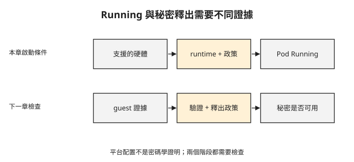

Day 7：為 kata-cc 準備硬體、runtime 與安全政策¶

上一章的一般 Kata 用獨立 kernel 的 VM 隔離 Pod，但宿主仍可讀取 VM 的記憶體明文。若 Pod 處理的敏感資料也需要防止宿主存取，kata-cc 會利用 SEV-SNP 的硬體記憶體加密與隔離，保護執行中的資料。
上一章的節點已有 kata-cc handler，卻不代表把 Pod 的 RuntimeClass 改掉就能使用機密容器。硬體是否支援、節點是否配置對應 runtime、guest 是否允許這個 Pod 的操作，都會影響啟動。這章會逐項核對這些條件，並分清平台設定與遠端密碼學證明。
先找能建立機密 child VM 的節點¶
AKS 的 kata-cc 路徑會為 Pod 建立機密 child VM，也就是在節點之下執行的 SEV-SNP guest。節點必須支援這種部署方式；一般機密 VM 與可建立機密 child VM 的機型不能只看名稱相近就互換。
你需要支援建立 SEV-SNP child VM 的 SKU（雲端機型代碼），例如 Standard_DC4as_cc_v5。以下以此機型為例，檢查指定區域的可用區資訊：
$ az vm list-skus -l westeurope --size Standard_DC4as_cc_v5 \
--query "[?name=='Standard_DC4as_cc_v5'].locationInfo[0].zones" -o tsv
3 1 2 ← westeurope 有,還有三個可用區
有可用區資訊，不等於你的訂閱已有足夠配額或當下有容量。查詢時還要確認限制與配額。
使用標準系統池，再加入 kata-cc 使用者池¶
本章實作需要另建一座使用預設 AKS 網路的叢集，不沿用 Day 6 的 BYOCNI Cilium 叢集；Cilium 與 kata-cc 的組合尚未在本課驗證。
下面是已驗證的建立方式，會產生計費資源。<rg> 與 <cluster> 分別是你選定的資源群組及叢集名稱。命令保留驗證使用的 Kubernetes 1.34；實作前需確認目標區域仍提供與 kata-cc 相容的版本，不能把歷史版本直接當成永久可用。
命令中的 OIDC issuer 提供身分權杖的簽發者資訊，workload identity 則讓工作負載以聯合身分使用 Azure 服務；它們是下一章存取金鑰服務的前提，不等同於 TEE 證明。
先查詢 westeurope 可建立的 Kubernetes 版本，查到版本仍不代表與 kata-cc 相容（依官方文件補上，本課沒有實跑）：
建立叢集前，先註冊 KataCcIsolationPreview 功能並查詢註冊狀態（依官方文件補上，本課沒有實跑）：
az feature register --namespace Microsoft.ContainerService --name KataCcIsolationPreview
az feature show --namespace Microsoft.ContainerService --name KataCcIsolationPreview \
--query properties.state -o tsv
重複執行上面的 az feature show，直到狀態為 Registered，再更新資源提供者的註冊（依官方文件補上，本課沒有實跑）：
# 1) 標準系統池(Ubuntu 小節點)+ OIDC + workload identity
az aks create -g <rg> -n <cluster> --location westeurope --tier free \
--kubernetes-version 1.34 \
--os-sku Ubuntu --node-vm-size Standard_D2as_v5 --node-count 1 \
--enable-oidc-issuer --enable-workload-identity
# 2) kata-cc 當 user 池(AzureLinux + KataCcIsolation + DC4as_cc_v5)
az aks nodepool add -g <rg> --cluster-name <cluster> --name katacc --mode User \
--os-sku AzureLinux --workload-runtime KataCcIsolation --node-vm-size Standard_DC4as_cc_v5
# 3) 官方要求:加池後跑一次 update 才會啟用 CC 功能(RuntimeClass 這時才出現)
az aks update -g <rg> -n <cluster>
完成建池與 az aks update 後，將 RG、CLUSTER 換成上面使用的名稱，取得叢集憑證並查詢節點與 RuntimeClass（依官方文件補上，本課沒有實跑）：
RG='<rg>'
CLUSTER='<cluster>'
az aks get-credentials --resource-group "$RG" --name "$CLUSTER"
kubectl get nodes -l agentpool=katacc -o wide
kubectl get runtimeclass kata-cc-isolation -o yaml
先用一般系統池建立叢集，再把 KataCcIsolation 加為使用者池。az aks update 是此驗證流程啟用機密容器整合的一步。完成後，檢查節點與 RuntimeClass：
$ kubectl get node -l agentpool=katacc -o wide
aks-katacc-… Ready CBL-Mariner/Linux 5.15.157.mshv1-2.cm2 containerd://1.7.7
$ kubectl get runtimeclass | grep kata-cc
kata-cc-isolation kata-cc ← az aks update 之後才出現
kata-cc-isolation 的 handler 是 kata-cc，節點也已 Ready。這仍只是平台狀態；下一步要讓指定這個 RuntimeClass 的 Pod 真正啟動。
政策要先描述允許的操作¶
機密 guest 不應無條件接受宿主端送來的操作。guest agent 是在 guest 內執行的服務，接收宿主端建立容器、設定網路介面等請求，並依安全政策決定是否執行；OPA/Rego是這裡使用的政策引擎與規則語言。
先準備 pod.yaml：Pod 使用 runtimeClassName: kata-cc-isolation、排程到對應節點池，並包含預定的映像、指令與環境變數。接著依 manifest 產生政策，而不是先部署一個沒有政策的 Pod。原驗證中，沒有政策時收到以下 sandbox 錯誤：
Failed to create pod sandbox: … UpdateInterfaceRequest: internal error query did not produce any values
UpdateInterfaceRequest 是 guest agent 設定網路介面的請求名稱。這組失敗與缺少政策有關；相同文字出現在其他環境時，仍要核對政策，不能僅憑訊息一律判定 CNI 故障。
az confcom katapolicygen 會依 manifest 產生政策，注入 io.katacontainers.config.agent.policy annotation。原驗證使用的 macOS 工具回報：
$ az confcom katapolicygen -y pod.yaml
ERROR: The katapolicygen subcommand for MacOS has not been implemented.
若工具仍有相同限制，可以使用 Linux 環境產生政策。以下已驗證方式要求本機已安裝且啟動 Podman，並把工作目錄的 pod.yaml 送進 Linux 容器：
podman run --rm --platform linux/amd64 -i mcr.microsoft.com/azure-cli sh -c '
az extension add -n confcom -y
cat > /tmp/pod.yaml
az confcom katapolicygen -y /tmp/pod.yaml
cat /tmp/pod.yaml
' < pod.yaml > pod-policy.yaml
這裡的 /tmp/pod.yaml 位於可丟棄的容器內，輸入與輸出則是本機的 pod.yaml、pod-policy.yaml。部署前要確認輸出仍是有效 YAML、政策 annotation 已加入，並檢查政策與預定映像、命令及環境變數一致。這個未釘版本的工具映像與擴充套件會隨時間改變，升級後需重新檢查產物。
若先前已建立沒有政策的 Pod，需先刪除它，再用產出的 manifest 建立；只更新手邊的 YAML 不會重建既有 sandbox。已套用政策的 Pod 在驗證中正常執行：
$ kubectl -n cc-lab get pod cc-pod -o wide
cc-pod 1/1 Running … runtimeClass=kata-cc-isolation node=aks-katacc-…
Running 表示這組硬體、runtime 與政策能完成啟動。它尚未回答遠端金鑰服務是否接受這個 guest。
讀取平台設定，保留證據層級¶
下圖列出啟動所需條件，並把下一章的證明與秘密釋出分開。先完成上排，才有可供後續驗證的 guest。

你需要有權限建立 privileged 除錯 Pod、將它排程到指定節點，並存取宿主檔案系統；以下使用與叢集相同的 kubectl 1.34。
選取 katacc 池的一個節點，使用 sysadmin profile 開啟具有特權的除錯容器（依官方文件補上，本課沒有實跑）：
NODE=$(kubectl get nodes -l agentpool=katacc -o jsonpath='{.items[0].metadata.name}')
kubectl debug "node/$NODE" -n default -it --image=ubuntu:22.04 --profile=sysadmin
進入除錯容器後，從掛載於 /host 的宿主檔案系統讀取 containerd 設定，再退出容器（依官方文件補上，本課沒有實跑）：
本章進一步檢查節點上的 containerd 設定，確認 kata-cc 指向對應 runtime 與 SEV-SNP 配置。這條執行路徑使用 Cloud Hypervisor，也就是負責建立與執行 child VM 的虛擬機監控器：
# 節點:AzureLinux/Mariner、SEV-SNP DC4as_cc_v5
# containerd 設定裡,kata-cc handler 指向 Cloud Hypervisor + SEV-SNP 的設定
[plugins."io.containerd.grpc.v1.cri".containerd.runtimes.kata-cc]
snapshotter = "tardev"
runtime_type = "io.containerd.kata-cc.v2"
[.kata-cc.options] ConfigPath = "…/configuration-clh-snp.toml"
↑ clh = Cloud Hypervisor,snp = SEV-SNP
clh 表示 Cloud Hypervisor，snp 對應 SEV-SNP。這份縮寫輸出、節點 SKU 與 Pod RuntimeClass 共同顯示預期的平台執行路徑；它不是由獨立驗證方確認的硬體證據，不能單靠檔名證明所有記憶體保護屬性。
回到本機終端機後，將 DEBUG_POD 換成剛才 kubectl debug 顯示的除錯 Pod 名稱並刪除它（依官方文件補上，本課沒有實跑）：
本章沒有取得 guest 內的 SNP report，也沒有直接測試宿主讀取私有記憶體失敗。遠端驗證與金鑰釋出會在 Day 8 接續。
疑難排解¶
指定區域無法建立 _cc_v5 節點¶
若收到 VMSizeNotSupported，核對所需機型、區域、訂閱限制與配額。可用其他區域時，需在該區域準備叢集；不要用一般 DCas_v5 直接替換 kata-cc 所需的 child VM 機型。
Pod 停在 ContainerCreating，出現 UpdateInterfaceRequest 錯誤¶
先確認政策 annotation 是否存在，內容是否由正確 manifest 產生。本章的無政策案例因 guest agent 拒絕請求而失敗；修正方式見前面的政策產製與重建步驟。
katapolicygen 回報 macOS 未實作¶
使用前述 Linux 容器產製方式。這是驗證時工具版本的限制；更新工具後，以實際支援情況為準。
Pod Running，卻不能 exec 或讀取 logs¶
預設政策可拒絕 ExecProcessRequest 與 ReadStreamRequest，分別影響執行命令與讀取串流。這不是 Pod 沒啟動。若確實需要除錯存取，要先評估允許範圍、重產政策並重建 Pod；政策改變也會影響下一章綁定的政策雜湊。
想一想¶
- 節點名稱、SKU 與配置檔都符合預期，這是否等同遠端金鑰服務已驗證 guest？
- 原 Pod 沒有政策而啟動失敗，你只修改本機 YAML 後再次查看同一個 Pod，為什麼狀態可能不變？
- 開放 exec 後重新產生政策，下一章的秘密釋出規則可能需要重新檢查什麼？
小結¶
kata-cc 的啟動需要合適的機型、runtime 整合與 guest 安全政策。平台資訊可以確認配置方向，Running 可以確認啟動成功，但兩者都不能取代遠端證明。接下來會讓金鑰服務依證據與政策決定是否釋出金鑰，並用允許與拒絕兩種結果檢查條件。
延伸閱讀¶
想再深入，可以從這幾份開始：
- AKS 機密容器部署：環境與部署前提。
- DCasccv5 機型：機密 child VM 硬體條件。
- 機密容器安全政策：政策產製與 guest 操作限制。
Kubernetes 標誌為 CNCF（Linux Foundation）官方資產，此處作社群教學用途。